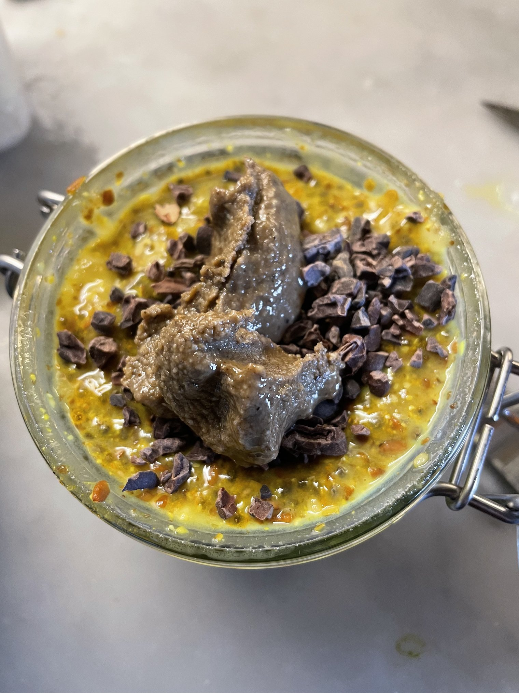
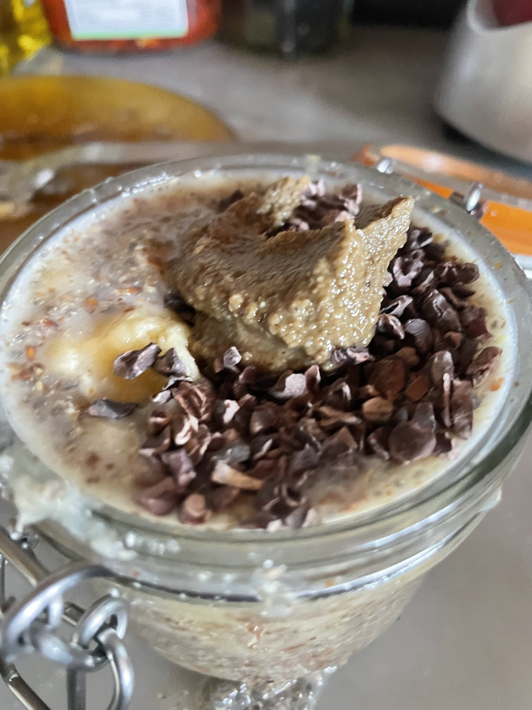

Pudding de chía y lino con crema de cacahuete
Ingredients
1×
- 2 cdas de chía
- 2 cdas de lino
- leche de avena
- 1 cda de crema de cacahuete
- nibs de cacao
- plátano

Preparación
Paso 1
En un tarro, mezclar 2 cdas de chía y 2 cdas de lino con leche de avena (unos 200ml).
Paso 2
Dejar reposar en la nevera unas horas o toda la noche.
Paso 3
Servir con 1 cda de crema de cacahuete (o tahini, o pipas de calabaza), nibs de cacao y, si se quiere, plátano en trozos.
